Current Affiliations
| 2017~ | Admitted as a member of the Masason Foundation |
|---|
Past Achievements
| Aug. | 2024 | Admitted to the Empower Europe Program |
| Sep. | 2023 | Admitted to the TKS Virtual Program |
| Jul. | 2023 | Coding mentor volunteer activity at Shinagawa |
| Dec. | 2022 | XR Kaigi 2022 Visionary Talk Speaker |
| Dec. | 2022 | XR Kaigi 2022 U25 sector Best Project Award |
| Oct. | 2022 | Japan Digital Agency - Speaker at Japan Digital Day 2022, Conversed with Mr. Kono, Japan digital minister |
| Nov. | 2022 | Mr. Kono, after Japan Digital Day 2022 visits The Fessenden School online to observe its approach to digitizing education |
| Sep. | 2022 | VR Project Exhibition at SoftBank Executive Briefing Center |
| Aug. | 2022 | Hosted a two-week VR exhibition at Hibiya Okuroji with funding from The Project to Support Emerging Media Arts Creators |
| 2022 | 25th JAPAN MEDIA ARTS FESTIVAL U-18 Award | |
| 2021 | Selected for The Project to Support Emerging Media Arts Creators | |
| 2021 | Accepted to Mitou Jr., Outstanding Performance Award | |
| 2019 | TECH KIDS GRAND PRIX 3rd place | |
| 2019 | Winner of the 30th Ueno Gakuen - Gordonstoun English Contest | |
| 2017 | Winner of the 2nd Japan Junior Programming Challenge in the Lower elementary school category | |
| 2017 | Won the Computer Software Association Award in the Elementary student category of U-22 Programming Contest |
Masason Foundation
2017 and ongoing: Admitted
Masason Foundation is a Japanese benefit corporation established by Masayoshi Son, Japan’s leading investor and industrialist. This foundation aims to support students and young adults aiming to change the future of humanity by providing them with an environment for them to develop their talents. As of July 2023, the foundation has gained 177 members from various countries around the globe, each receiving financial support for education and / or startups while also helping to build a better community within the foundation.
I was admitted to the foundation as a 1st generation member during my 3rd grade year in 2017. My pure passion for programming and proficiency in English was highly valued. Without financial support from the foundation, I would never have studied abroad and experienced what the U.S. has to offer in terms of education.
I have also given back some effort back to the foundation through hosting programming courses, participating as a speaker during the introductory briefing session and starring for the member introduction VTRs. This wonderful community of highly motivated foundation members is and will always be a valuable treasure of mine.
Masason Foundation https://masason-foundation.org/en/
Masayoshi Son https://en.wikipedia.org/wiki/Masayoshi_Son
Foundation Member - Ryan Moriya https://masason-foundation.org/en/scholars/?scholar_id=3073
Link to original
Empower Europe Program
Aug 2024: Admitted and participated
“Empower” Europe Program was an opportunity provided for selected members of the Masason Foundation to visit globally renowned universities, research facilities and startups in the UK, Switzerland and France.
Pictures and summary below!
UK
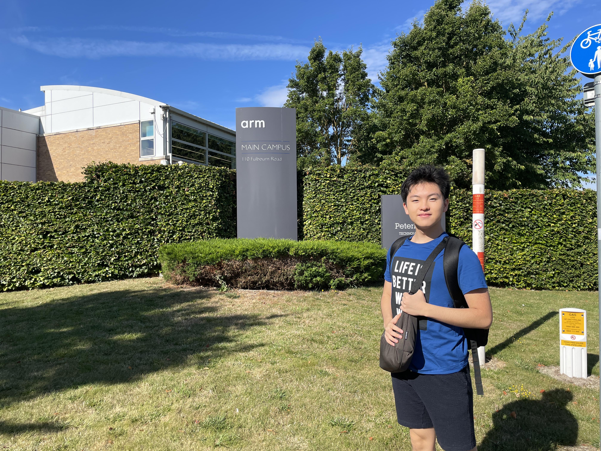
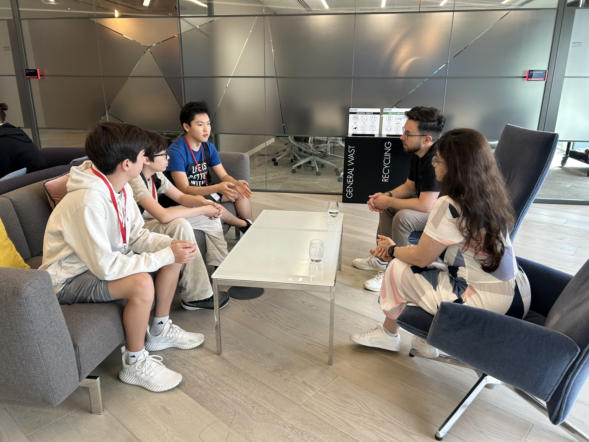
Arm campus in Cambridge, UK. Here we learned that Arm’s designs are embedded within just about any central processing units, whether it be in a laptop, smartphone or an “IOT device” such as security cameras and robotic arms in industrial lines.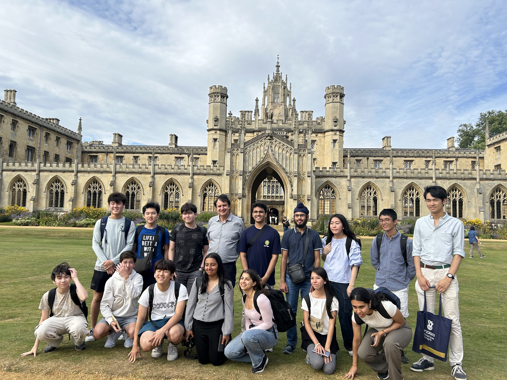
Another notable visit in the U.K. was St. John’s College in Cambridge University. Dr. Matthias, who I have met before in Tokyo, toured us around the centuries-old campus. The college seemed to have a special connection with Japan, as it was the only one in Cambridge that accepted Japanese high school graduates with no further requirements.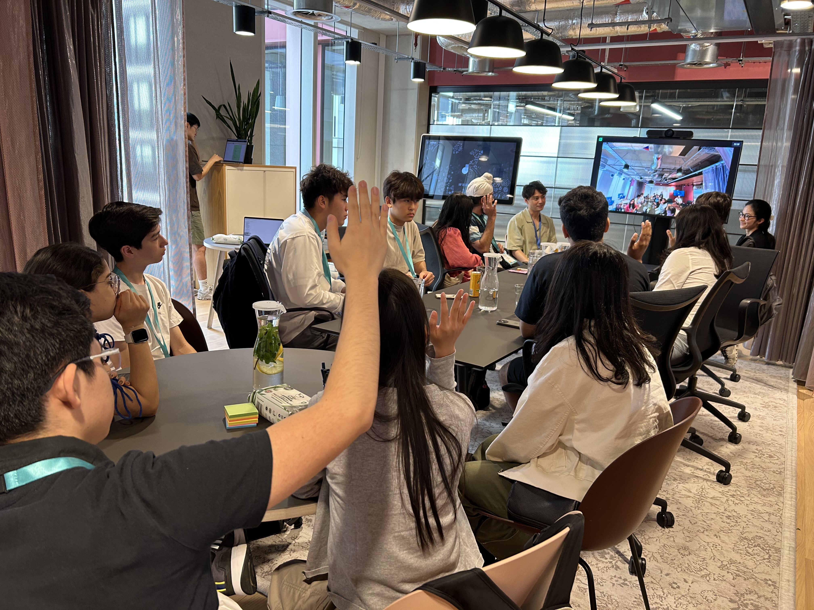
We also learned about the newest experiments in AI at Google Deepmind. In addition to the further refinement of Text-to-video and audio generation, they were working on a feature to bind AI generated media with a watermark to keep track of them even after being copied, trimmed or edited in other ways. My avatar also made it to the UK. Say hello!Switzerland
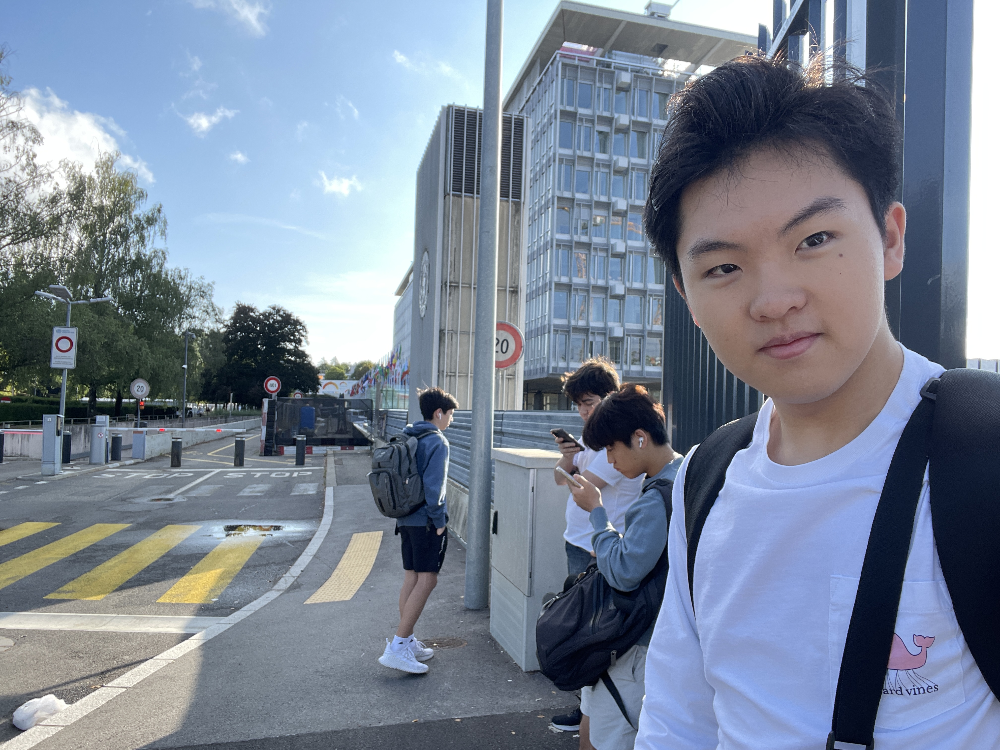
WHO shared with us a basic overview of their role in maintaining global wellbeing and responding to pandemics and epidemics. They noted that the most difficult part was not preparing gear and medication, but about getting every community in registered countries to trust and carry out their plan, whether it be wearing masks or receiving vaccination.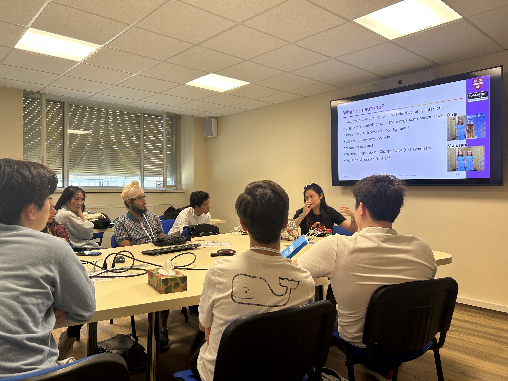
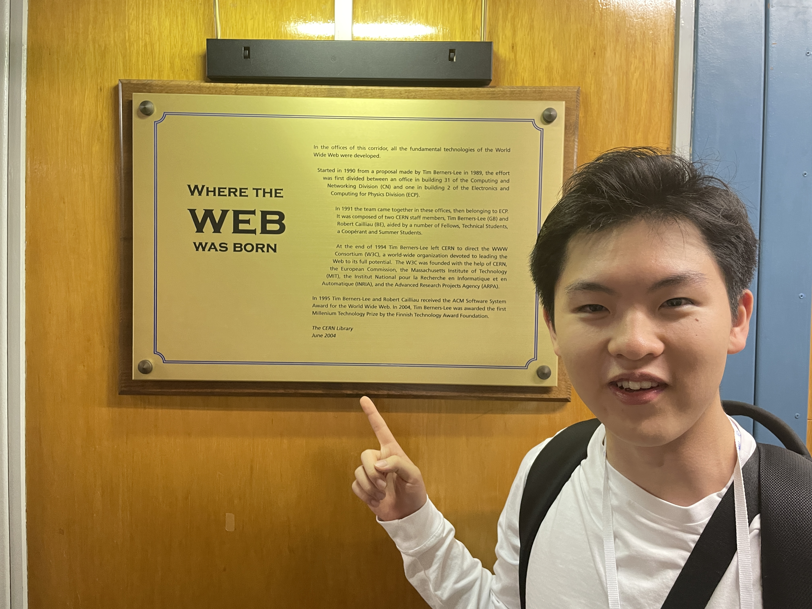
Our next stop was at CERN. The clusters of laboratories established in a beautiful landscape between Switzerland and France held experiments at the very zenith of our fundamental understanding of physics. It is the birthplace of barely understood physics andtechnologies that may, over time, become integrated into our daily lives (such as the world wide web).France
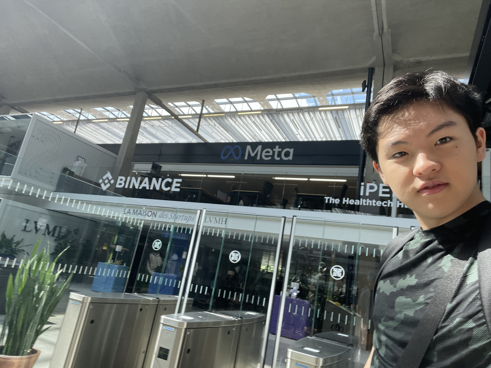
Station F in France hosts various startups similar to Silicon Valley, but with a more hands-on approach. In addition to funds, they provide meeting spaces for the startups to receive help from other startups or sponsor companies such as Apple, Google and Meta. Its campus is a huge train station from the 20s, now refurbished with a collaborative feel, with a huge open space in the middle not unlike Arm’s new office. The streamlined nature of Station F made the notion of starting a startup less intimidating to me.Link to original
TKS Virtual Program
September 2023: Admitted and participated
TKS (The Knowledge Society) is an organization aiming to develop young innovators and unleash their potential to impact the world. The curriculum involves learning about world’s leading technology, leader mentality and solving societal problems. Beginning September 2023, I pursued this 3-to-6-hour weekly commitment, attending sessions and forming connections with other students of diverse backgrounds and skill sets.
Link to original
Coding mentor volunteer activity at Shinagawa
July 2023: Volunteered
During my elementary school years, I spent countless hours learning how to code myself as there was no one around that could teach me how to program. Little did I know that this proficiency in programming would be the reason why I’m able to obtain a scholarship and study abroad in the United States.
In the last few years, Japan introduced programming as one of the mandatory subjects in a school curriculum. I fully support this decision in making programming education more accessible. However, I am also concerned that some schools may not adapt well to this sharp turn and remove the joy and curiosity from programming. Although my efforts may be small, I have been volunteering to teach programming two summers ago in Shinagawa, Tokyo.
As someone who loves programming, I wish to help as many students as possible in discovering the expressive joy of programming.
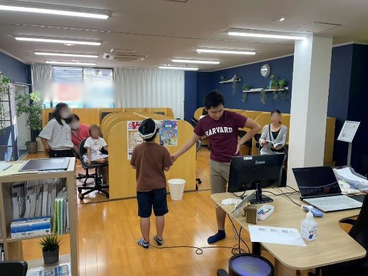
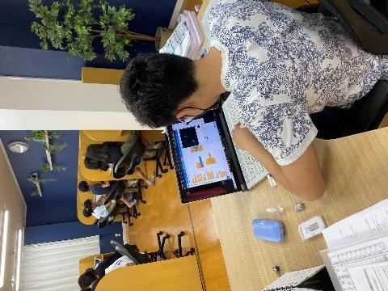
Link to original
XR Kaigi 2022
December 2022: Visionary Talk Speaker December 2022: U25 sector Best Project Award
XR Kaigi (Kaigi meaning “conference”) is an annual Japanese conference between the leaders of VR, AR, MR and metaverse development. I was invited to be a speaker at this event after the summer VR exhibition I hosted in the summer of 2021. This led me to submit my intuitive VR 3D modeling software to the closely related competition, later commemorated as the best project award in the U25 sector.
XR Kaigi https://www.xrkaigi.com/
Visionary Talk https://youtu.be/0IxqQTR8Zy0?t=1257
U25 sector Best Project Award https://youtu.be/_EKL2etG3xg?t=1427
Link to original
Japan Digital Day 2022
October 2022: Speaker at Japan Digital Day, Conversed with Mr. Kono, Japan digital minister November 2022: Mr. Kono’s online observation of The Fessenden School and its approach to digitizing education
In Japan, “Digital Day” has been established as an annual opportunity for citizens to reflect on and reconsider the digitalization of the country. Last year on Digital Day, I was fortunate enough to be personally chosen by the Digital Agency to join the discussion with Minister of Digital Transformation, Mr. Kono.
Digital Day https://www.digital.go.jp/news/0af240e8-4922-4464-95d9-bf3184c25285/
Taro Kono
Link to original
https://en.wikipedia.org/wiki/Taro_Kono
SoftBank Executive Briefing Center
September 2022 and ongoing: Hosted VR exhibition
SoftBank, one of Japan’s leading companies, is a company founded by Masayoshi Son, currently focusing on domestic and international cellular networking services. SoftBank’s Executive Briefing Center provides a space for business customers to discuss their business growth through live demonstrations of the leading use cases for 5G, AI and IOT. There are many devices prepared to help customers visualize their specific path to the future.
Since September 2022, my procedural terrain generating VR software, Drift Abyss, has been offered a permanent exhibition plot in the Executive Briefing Center. I am grateful that I can contribute to the visitor’s ideas and ambitions through my project.
SoftBank https://www.softbank.jp/en/corp/aboutus/
SoftBank Executive Briefing Center https://www.softbank.jp/biz/ebc/
Link to original
25th JAPAN MEDIA ARTS FESTIVAL
2022: 25th JAPAN MEDIA ARTS FESTIVAL U-18 Award
The Japan Media Arts Festival is a media arts event organized by the Agency for Cultural Affairs of Japan, which honors top project submissions in four categories: Art, Entertainment, Animation, and Manga. They also provide an opportunity for guests to enjoy the award-winning pieces. The 25th annual festival received submissions from over 95 countries worldwide, with more than 3,500 entries. My VR work, VR Sandbox, was chosen as the sole winner of the Under-18 award.
Japan Media Arts Festival
https://j-mediaarts.jp/en/Award summary https://j-mediaarts.jp/en/award/single/vr-sandbox/
Link to original
The Project to Support Emerging Media Arts Creators
2021: Selected for The Project to Support Emerging Media Arts Creators
August 2022: Hosted a two-week VR exhibition at Hibiya Okuroji
The Domestic Project to Support Emerging Media Arts Creators is a program hosted by the Agency for Cultural Affairs to foster and support domestic media art curators. It provides support in the form of advice from experts, technical assistance, networking opportunities with other creators, presentation opportunities, and up to 5 million JPY in production funds.
I formed a group with my older sister named 8LEGS to develop and propose an ambitious VR project later named Drift Abyss. Users can navigate through a real-time generating virtual space through exercise such as squatting. This project was accepted into the program. Once development was on full throttle, I was responsible for constructing the algorithm and code necessary to generate meaningful terrain while my sister made assets through 3D modeling. Our diverse advisories: renowned manga artists, animation directors, and media artists provided us with guidance throughout the process. We also rented a storefront in Hibiya, Tokyo, and successfully hosted a two-week exhibition for our VR demo.
Through promotional efforts and crowdfunding, we received support from many people and were able to adopt and develop a wide range of skills other than programming. Seeing the joy and excitement of the customers during the exhibition, I discovered our ability in evoking contentedness to others and ourselves.
The Domestic Project to Support Emerging Media Arts Creators https://creators.j-mediaarts.jp/about-en
Final Report https://creators.j-mediaarts.jp/reports/8276
VR Demo Exhibition at Hibiya, Tokyo https://www.jrtk.jp/hibiya-okuroji/topics/detail_00721/
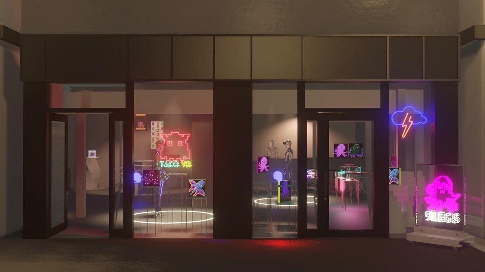
Planned exterior view of the VR exhibition site.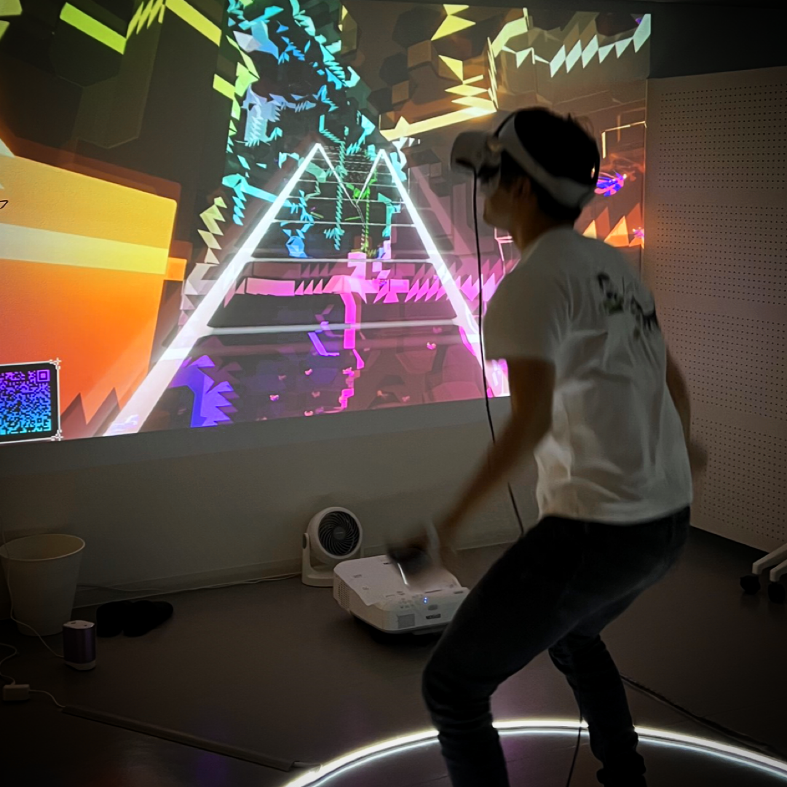
one of our many customersLink to original
Mitou Jr.
2021: Mitou Jr. Outstanding Performance Award
The Mitou Jr. program (Mitou meaning “Unexplored”) is an organization hosted by an external organization of the Ministry of Economy, Trade and Industry. It aims to support individuals with exceptional technical skills under the age of 17 who are exploring innovative ideas.
To apply, I developed VR SANDBOX, an easier, more intuitive 3D modeling app compared to modern to flatscreen alternatives in a VR environment. Users can generate meshes by using their hand controllers like a brush and palette, eliminating the need to combat unintuitive UI, keybinds or perspective. At the end of the year-long term, I received the Outstanding Performance Award.
As of 2023, I still participate in the Mitou Jr. community as an alum, contributing to the development of younger members. I feel that Mitou Jr. helps create bonds between individuals in the IT field in Japan.
Mitou Jr. https://jr.mitou.org/english/
Mitou Jr. Acceptance Rate Statistics (Admission rate for the Outstanding Performance Award is 5.7% as of 2021.) https://jr.mitou.org/english/stats
Presentation video of my project https://jr.mitou.org/projects/2021/vr_sandbox
Link to original
TECH KIDS GRAND PRIX
2019: TECH KIDS GRAND PRIX 3rd place
TECH KIDS GRAND PRIX is the largest elementary school programming contest in Japan. In addition to the quality of submitted projects, it is known for heavily weighing the participants’ vision and presentation skills. My initial motivation to develop a 3D drone piloting simulator came from my experience of losing my drone due to misinput. As I progressed through the competition, I presented my project and the wonders of programming, showing how a single PC and an internet connection can expand one’s world many times over. Ultimately, I achieved third place among 1,422 contestants. Presenting in front of a large audience for such a significant occasion was an invaluable experience for my former self.
TECH KIDS GRAND PRIX https://techkidsschool.jp/grandprix/
My presentation https://www.youtube.com/watch?v=qNZZpa6CuyI&t=2977s
Results of TECH KIDS GRAND PRIX 2019 https://techkidsschool.jp/grandprix/2019/
Link to original
30th Ueno Gakuen - Gordonstoun English Contest
2019: Winner of the 30th Ueno Gakuen - Gordonstoun English Contest
The competition granted its first and second place winners with a trip to the Gordonstoun International Summer School. I was curious to learn abroad, so I spent time preparing my speech about singularity. Each runthrough refined my intonation and gestures. In the end, not only did I improve as a presenter, but I won. This made me the youngest winner in the history of the contest, as a fourth grader among all other middle school competitors. Living and learning alongside peers from diverse backgrounds at Gordonstoun was a paradigm shift for me, and I discovered my desire to receive education abroad.
Awards ceremony https://www.uenogakuen.ac.jp/junior_college/news/2019/30_4.html
Gordonstoun International Summer School https://giss.org.uk/
Link to original